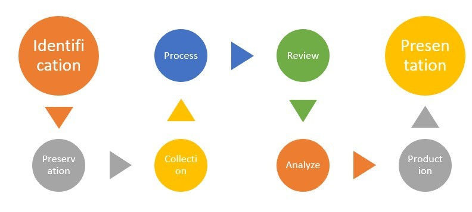

Introduction
bb1840e4-5425-49a3-9d75-477b8f016ff8
Welcome to the Digital Data Forensic Techniques Practice Lab. In this module, you will be provided with the instructions and devices needed to develop your hands-on skills.
dc640c20-9434-45ea-b7c2-6d4d6a196bfc
Learning Outcomes
In this module, you will complete the following exercises:
- Exercise 1 - Data Forensic Techniques
After completing this module, you should have further knowledge of:
- Motive, Opportunity and Means
- Documentation/Evidence
- Data Acquisition
- On-Premises vs. Cloud
- Integrity
- Preservation
- E-Discovery
- Recovery
- Supporting Non-repudiation
- Strategic Intelligence/Counterintelligence Gathering
Exam Objectives
The following exam objectives are covered in this module:
4.5 Explain the key aspects of digital forensics.
- Documentation/Evidence
- Acquisition
- On-premises vs. Cloud
- Integrity
- Preservation
- E-discovery
- Data Recovery
- Non-repudiation
- Strategic Intelligence/ Counterintelligence
Note: Our main
focus is to cover the practical, hands-on aspects of the exam
objectives. We recommend referring to course material or a search engine
to research theoretical topics in more detail.
Lab Duration
It will take approximately 30 minutes to complete this lab.
6cde82b4-969e-4ba2-9a1b-b030a82e21d0
Help and Support
For more information on using Practice Labs, please see our Help and Support page. You can also raise a technical support ticket from this page.
Click Next to view the Lab topology used in this module.
d2c53300-f951-45a9-9aa4-3d4ecae69e11
Lab Topology
This module contains supporting materials for Security+.

Click Next to proceed to the first exercise.
<
Home |
README >
CompTIA Security+ Practice Labs
Exercise 1 - Data Forensic Techniques
The forensic investigation process is a seven-step
process that includes identification, preservation, collection,
examination, analysis, presentation and decision. Digital evidence has a
very short lifetime and must be collected first.
Learning Outcomes
After completing this exercise, you should have further knowledge of:
- Motive, Opportunity and Means
- Documentation/Evidence
- Data Acquisition
- On-Premises vs. Cloud
- Integrity
- Preservation
- E-Discovery
- Recovery
- Supporting Non-repudiation
- Strategic Intelligence/Counterintelligence Gathering
Your Devices
This exercise contains supporting materials for Security+.

Motive, Opportunity and Means
Motive
- Who was responsible for the crime? Considering the
motive of a crime (why the crime was committed), is a significant piece
in figuring out who would participate in such an activity.
- Maybe the perpetrator was persuaded by either internal or external conditions.
Opportunity
- Where and when was the crime committed?
- Prospects generally arise when certain vulnerabilities or weaknesses are present.
Means
- Refers to the method that was used to commit the
crime. In cybersecurity, it may refer to the attack method that was used
to compromise the resource.
Documentation/Evidence
Legal Hold
A legal hold is a process that an organization might
use to contain all relevant data when litigation is expected. The legal
hold process is usually initiated by a communication from legal counsel
to an organization to suspend the normal disposal of records, such as
the recycling of tape backups or the archiving or deletion of data.
Chain of Custody
In scenarios where evidence might be used in civil or
criminal litigation, an organization needs to establish a chain of
custody; otherwise known as a chain of evidence, which documents the
location of the evidence from the moment it is collected to the moment
it appears in court. This can include the police who collect it, the
evidence technicians who process it and the lawyers who use it in court.
Chain of custody has the following information:
- A data history displays how evidence was written, examined, transported, and stored to be presented in court.
- Chain of custody should follow evidence till the end
- Copies of data made as required must be tamper-proof
- Chain of custody evidence commands that all evidence be categorized with information representing who secured and validated it.
- Magnetic disk surfaces ought not to be marked on.
- The most common reason for inappropriate evidence
collection is the absence of an established incident response team, lack
of an established incident response process, badly written policy or a
broken chain of custody.
- Dead forensics - when the examination is done on static data in a lab
- Live forensics - when the examination is done in-field and includes volatile data.
Computer Criminal Behaviour
- Psychological crime scene review (profiling) can also be piloted using the criminal’s MO and signature behaviors.
- Profiling offers insight into the attacker's attack
pattern and can be used to identify the attacker or at the very least,
the tool used for the crime.
- Locard’s Exchange principle mentions that the
criminal or the attacker leaves some information behind at the crime
scene and takes something with them.
Forensic Process Best Practices
- The original image needs to be a bit-level copy,
sector by sector, to capture destroyed files, slack spaces and
unallocated clusters.
- The original image is called the source or the primary image, which must be kept in a library.
- The forensic investigator should only work from a copy of the source image called the secondary image.
- The images should be timestamped to show when the data was gathered.
- Before moving the images to a media location, it is vital to confirm the destination has enough space and is secure.
Data Acquisition
Based on the type of media, there are various methods an organization can use to retrieve data for forensic analysis purposes.
- Capture system image - When capturing a
system image, an organization will create an exact sector-level
duplicate of the media. Typically, the duplicate is created using a hard
drive duplicator or software imaging tool that mirrors the block level
data.
- Network traffic and logs - As part of
network forensics, an organization might observe and analyze computer
traffic to detect intrusions and data collection, or as part of the
evidence in litigation. An organization might also use network sniffing,
recording, acquisition, and monitoring network traffic and event logs
to examine a network security incident.
- Capture video - When capturing video and/or
audio for forensic review, an organization needs to understand how the
system records the data (e.g., digital or analog) and the choices
available to obtain the data (e.g., CD/DVD writing, USB, etc.)
- Record time offset - During the playback of a
system image, media or data, an organization needs to understand the
time offset of when the information was recorded (e.g., time zone). The
time offset is typically logged when capturing the data to ensure that
investigators account for the difference when reviewing the information
later.
- Take hashes - After an image is captured, it
is typically verified at critical points throughout the analysis to
ensure that the evidence is still in its original state. This
verification typically includes using the SHA-1 or MD5 hash functions.
The process in which an image is verified with a hash function is called
hashing.
- Screenshots - In some scenarios, it can be
necessary to capture information for forensic analysis using
screenshots. Typically, these are still image captures of information on
a computer monitor. This is commonly used in less-critical forensic
analysis or scenarios when capturing a system image, media, or data is
not available.
- Witness interviews - Many times during
forensic analysis, it is important to interview or depose individuals
who might have direct knowledge related to the incident. This can
include individuals responsible for the systems or network devices that
were compromised or individuals who might have information about the
attack.
Order of Volatility
The order of volatility is the order in which an
organization should collect forensic evidence. Since highly volatile
data can be easily lost, the most volatile data should be collected
first and the least volatile data should be collected last. For example,
an organization might choose the following order; physical memory,
virtual memory, disk drives, backups and printouts. This is the order of
volatility of the data that needs to be investigated.
Firmware
Firmware is software preserved on a ROM chip. At the
system level, it contains the basic commands needed to start a computer.
Firmware is also used to provide operating commands in peripheral
devices such as printers.
Snapshots
A snapshot is a copy of an application, disk or
system. Typically, an organization will use a snapshot to restore a
system or disk to a specific time. However, a snapshot is not commonly
used as a periodic backup strategy because of the amount of backup time
and backup storage required.
Snapshots can be made of a system where a forensic
investigation is performed. By creating a snapshot of the system, the
original system is preserved.
On-Premises vs. Cloud
Forensic data investigation for data situated in the
cloud differs significantly from data stored on on-premise
infrastructure. Several different dependencies are quired for a forensic
investigation. These include the Cloud Service Provider (CSP), which
hosts the data. After a cybersecurity incident has occurred, the legal
jurisdiction and the laws that govern that specific region need to be
considered before the investigation is conducted.
A company can choose where the data must be stored and be careful when selecting it as it might pertain to different data laws.
Maintaining a chain of custody for data stored in the
cloud is more challenging than the traditional on-premise storage as
the control of the data penultimately lies with the Cloud Service
Provider(CSP), which can create its unique challenges.
Right to Audit Clauses
An audit clause is basically an agreement
to deliver documents. Usually, it gives a principal the right to
"audit" a contractor's books and records, given the contractor's
compliance with its obligations within the contract.
Data Breach Notification Laws
HITECH’s (Health Information Technology for Economic
and Clinical Health Act of 2009) data breach notification rule is
distinct. It is a federal law mandating the notification of affected
persons.
Personally identifiable information includes:
- Social Security number
- Driver’s license number
- State identification card number
- Credit or debit card number
- Bank account number with the security code, access code, or password that would permit access to the account
- Medical records
- Health insurance information
Data breach notification laws contain policies
relating to the application of these laws. These laws entail entities
that have been subjected to a breach to communicate with the individuals
whose data was breached and other appropriate parties and inform them
about the incident.
These laws contain the manner in which notification
needs to occur, the time limit for these notifications, people, agencies
and authorities that must be contacted about the breach. It is required
that data processors are to notify data controllers within 72 hours of a
breach, and the information controllers are required to inform the
supervisory data protection authority as soon as possible.
Data breach notification laws also contain exceptions
to the notice requirement. For example, under the GDPR, notification of
the data breach is dependent on the severity of the breach. Few data
breach notification laws do not necessitate notification if it is
identified that the breach will not harm the affected parties. In other
laws, notification occurs when a threshold is reached.
Integrity
Hashing
A hashing algorithm is a mathematical function that
maps data of different sizes to a hash of a fixed size. The purpose of a
hash function is to be a one-way function, impossible to go back. In
reality, the public key used in asymmetric encryption is based on a hash
value — the value is calculated from a base input number using a
hashing algorithm.
Various cryptographic hashing algorithms can be used to produce a checksum value. A checksum value
is a small piece of data derived from the data being protected. The
primary purpose of the checksum is to validate the authenticity of the
data.
MD5
The Message-Digest algorithm 5 (MD5) is one of the
two most widely used hashing algorithms. The function takes an input of
arbitrary length and produces a message digest that is 128 bits long
(i.e., a 128-bit hash value), typically rendered as a 32-digit
hexadecimal number. MD5 has been known to cause collisions (i.e., two
distinct messages that hash to the same value). However, it can still be
used as a checksum to verify data integrity, such as verifying
unintentional corruption or determining the partition for a particular
key in a partitioned database.
SHA
The other one of the two most extensively used
hashing algorithms, the Secure Hash Algorithm (SHA), is the common
standard used for generating digital signatures. SHA was invented by the
NSA. SHA-1 takes an input and the output is a 160 bit hash value. The
outcome of SHA-2 is 224, 256, 384 or 512 bits.
HMAC
Hash-based message authentication code (HMAC)
validates the data integrity and the authentication of a text. Because
HMAC uses two passes of hash computation, the algorithm offers better
protection against attacks.
RIPEMD
European researchers established RACE Integrity
Primitives Evaluation Message Digest (RIPEMD); the design is based on
the MD5 hashing algorithm. One of the current versions, RIPEMD-160, is
an advanced version of RIPEMD. The performance of the algorithm is
comparable to SHA. RIPEMD is available in 128, 256 and 320-bit versions.
Digital Signature
The Digital Signature Algorithm (DSA) is considered a
standard for digital signatures. The digital signature provides message
authentication, integrity and non-repudiation. DSA creates the digital
signature by using unique mathematical functions involving two 160-bit
numbers. These numbers originate from the message digests (strings of
digits created by a one-way hashing formula) and the private key. While
the signer’s private key signs messages, the digital signature is
verified by the signer’s corresponding public key. DSA uses the public
key only for authentication, not for encrypting or decrypting messages.
Data Provenance
Data Provenance denotes records of the inputs,
entities, systems, and processes that influence interest data,
offering a historical record of the data and its origins.
Preservation
After data is captured, it has to be preserved as
evidence. While various laws cover the seizure and preservation of data,
law enforcement personnel will often perform this in criminal cases, as
mandated by a warrant. However, in civil litigation it will typically
be an officer within the organization. It is assumed that a company is
able to investigate their own equipment without a warrant.
Preservation of the captured data ensures that
potentially discoverable information is protected against alteration or
deletion, thus hindering the investigation.
When evidence is collected and labeled to preserve the chain of custody, the label should include the following information:
- General description of the evidence.
- Time and date the evidence was collected.
- Exact location the evidence was collected from.
- Name of the person collecting the evidence.
- Relevant circumstances surrounding the collection.
- Each person who handles the evidence needs to sign
the chain of custody log indicating the time in which they took direct
responsibility for the evidence and when they handed it to the next
person.
- The chain of custody must provide an unbroken
sequence of events relating to the evidence from the time it was
collected until the trial.
E-Discovery
Process of producing for a court or external attorney
all ESI (Electronically Stored Information) pertinent to a legal
proceeding.
The eDiscovery process includes information
governance, identification, preservation, collection, processing,
review, analysis, production, and presentation activities.
Figure
1.1: Shows 8 Step Electronic Discovery Reference Model (EDRM);
Identification, Preservation, Collection, Process, Review, Analyze,
Production and Presentation.
Recovery
Many times during a forensic analysis, it may be
necessary to recover information that has been intentionally or
mistakenly deleted. The investigator is responsible for recovering as
much evidence as possible using various tools or methodologies. The
types of data recovered can vary depending on the investigation, but
examples include chat logs, emails, documents, images or internet
history. This data might be recovered from accessible disk space,
deleted (or unallocated) space or the operating system’s cache files.
Supporting Non-repudiation
Provided only by public key (or asymmetric)
cryptosystems, non-repudiation assures the recipient that the message
was originated by the sender. It prevents the sender from claiming they
did not send the message (also known as repudiating the message).
Strategic Intelligence/Counterintelligence Gathering
Strategic intelligence is collecting, processing,
analyzing, and disseminating intelligence information for formulating
policy and military plans at the international and national policy
levels. In the commercial world, this information is used to build
qualities that enable leaders to be effective strategists. The
intelligence information gathered in counterintelligence is for
protecting an organization’s intelligence program against an attacker or
the opposition’s intelligence service. The information gathered can be
used for forensic analysis, counter-espionage or sabotage.
Active Logging
During counterintelligence gathering, it might be
necessary for an organization to maintain active logs of the opposition
or attacker's activity.
7429868b-128c-4069-95a9-7246a6a9e5a3
d31298f5-3011-4089-bf06-fbf08c44a7f9
Keep all devices that you have powered on in their current state and proceed to the review section.
Review
Well done, you have completed the Digital Data Forensic Techniques Practice Lab.
c6e74811-6d1f-4779-94c2-34fcca239022
05184198-dbf6-4580-9a43-44b52785b965
b1f3ca2d-92fa-4f2d-9f66-7c33623f7f7c
59d4cc86-9092-45ac-82b1-fee577a608af
a737de3b-d62e-43f2-b181-263a7d21c249
aaaaaaaa-1111-1111-1111-193f35a24fe3
Summary
You completed the following exercises:
- Exercise 1 - Data Forensic Techniques
You should now have further knowledge of:
- Motive, Opportunity and Means
- Documentation/Evidence
- Data Acquisition
- On-Premises vs. Cloud
- Integrity
- Preservation
- E-Discovery
- Recovery
- Supporting Non-repudiation
- Strategic Intelligence/Counterintelligence Gathering
Feedback
067744a4-4299-4662-b5be-04dbb636a007
Shutdown all virtual machines used in this lab. Alternatively, you can log out of the lab platform.